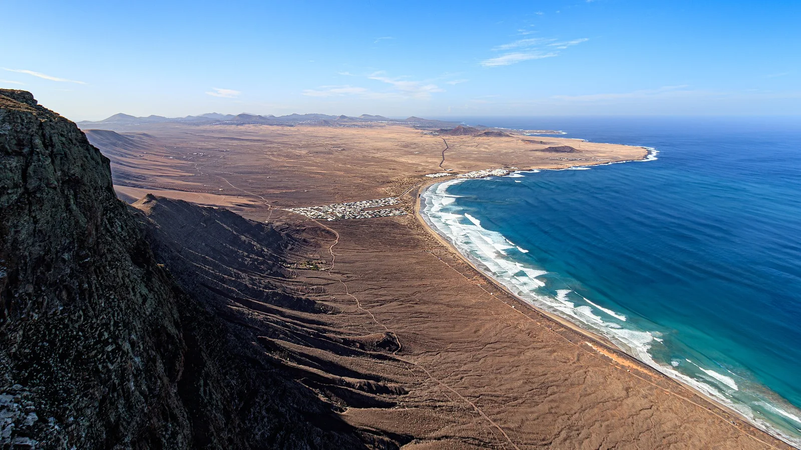

Playa de Famara
Lanzarote, Espagne · surf, kitesurf

Six kilomètres de sable au pied de falaises vertigineuses, sur la côte nord de Lanzarote. Le spot le plus accueillant de l’île pour apprendre à surfer.
- Lieu
- Lanzarote, Espagne
- Niveau
- Débutant
- Activités
- surf, kitesurf
- Type d'eau
- Mer / océan
- Coordonnées
- 29.12, -13.55 (position approximative du secteur)
Dangers à connaître
- Courants latéraux par grosse houle.
- Vent souvent onshore l’après-midi.
- Les courants sont forts à Famara : baigne-toi seulement près des écoles.
Le conseil d'Ocean Buddy
Surfe la marée montante au centre de la plage et évite les rochers au sud.
Ouvrir dans Ocean Buddy Télécharger sur l'App Store
Source : Fiche Ocean Buddy · septembre 2026 · à vérifier localement.